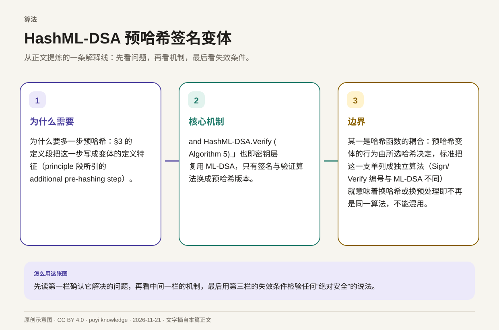
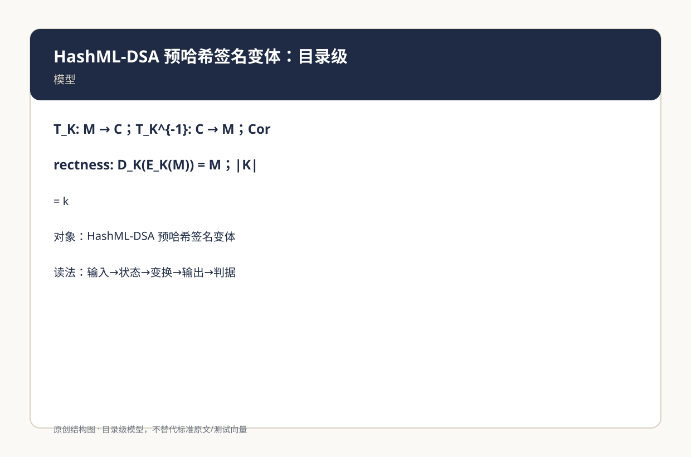

原理与机制
算法：HashML-DSA 混合签名（HashML-DSA）。变体的身份由两个事实构成（§3 的定义段）：它「includes an additional pre-hashing step before signing」，并且「It consists of three main algorithms: ML-DSA.KeyGen (Algorithm 1), which is the same key generation algorithm used for ML-DSA; HashML-DSA.Sign (Algorithm 4); and HashML-DSA.Verify (Algorithm 5).」也即密钥层复用 ML-DSA，只有签名与验证算法换成预哈希版本。

为什么重要
为什么要多一步预哈希：§3 的定义段把这一步写成变体的定义特征（principle 段所引的 additional pre-hashing step）。工程动机由此可直接读出——签名算法吃的是摘要而不是任意长的消息本体，调用方因此可以在消息规模很大时先把数据收敛成定长输入，而不必把整段数据交给内部编码。标准把这一支与 ML-DSA 并列规定，也说明预哈希不是实现私改而是被规范化的选项。
应用与实例
合规口径在 §1.4 给出定义：一个技术要成为 approved，须满足该条定义列出的三种情形之一——写在 FIPS 或 NIST 建议里、被 FIPS 或 NIST 建议采纳、或列入 NIST 批准的安全函数清单（按留存件的编号列以散文复述，不逐字引用，避免把编号里的引号带进正文）。对使用者的含义是：把 HashML-DSA 当作经批准的签名方法来对接现有合规流程，与 ML-DSA 同属 FIPS 204 的批准范围，而不是后量子候选算法。

边界与攻击面
限度有两层。其一是哈希函数的耦合：预哈希变体的行为由所选哈希决定，标准把这一支单列成独立算法（Sign/Verify 编号与 ML-DSA 不同）就意味着换哈希或换预处理即不再是同一算法，不能混用。其二是确定性口径：文件把 pseudorandom 定义写成「effectively random as long as the internal action of the process is hidden from observation」，也即确定性签名对外表现得随机的前提是内部动作不被观察；若实现泄露中间值，这一层论证就不成立。
历史与背景
版本事实按项目口径复述于引号外：FIPS 204 于 2024 年 8 月 13 日发布并生效，把 ML-DSA 与预哈希的 HashML-DSA 一并写进同一份标准；留存件的免费获取行给出数字对象标识符，该行不引号。就条目本身而言，值得记的是变体被标准化这一步：从竞赛候选里的方案，到拥有自己算法编号的 Sign/Verify，说明它已按可实现、可验证的形式进入标准文本。
技术参数与复算边界
该条目的形式模型是 (h=H(M),\quad H:{0,1}^{*}\to{0,1}^{n})。输入：输入：HashML-DSA 混合签名的公开参数、密钥/随机数与消息；变量说明：M 任意长度消息，h 为 n 位摘要。 预期输出：按 HashML-DSA 混合签名 的规范执行后得到可验证的输出或可比较的优势界。 复算必须给出输入、步骤、输出和单位；示例只演示流程，不替代标准测试向量。
复杂度由密钥长度、分组/状态规模、轮数、随机数质量和敌手模型共同决定；参数越界、版本差异与实现侧信道都可能使公式结论失效。已登记限制：该条目只给出形式模型与可复算步骤，不声称已完成生产实现、侧信道认证或第三方安全评估。
参数与状态规模
公式 (h=H(M),\quad H:{0,1}^{*}\to{0,1}^{n}) 的输入、输出和单位必须逐项登记；复算顺序为：1. 消息填充到块边界 2. 压缩函数逐块迭代 3. 输出链值作为摘要。
状态规模、密钥长度、分组长度和轮数决定复杂度；这些量不能从标题推断，必须以标准或实现文档为准。
逐步示例与核验
形式模型与复算步骤
[h=H(M),\quad H:{0,1}^{*}\to{0,1}^{n}]
HashML-DSA 混合签名的公开参数、密钥/随机数与消息；变量说明：M 任意长度消息，h 为 n 位摘要。1.消息填充到块边界。2.压缩函数逐块迭代。3.输出链值作为摘要。边界：公式只覆盖已登记的参数与假设；参数取值、标准版本和实现细节仍以来源为准。
参考出处
- Wikipedia search entry for HashML-DSA 混合签名. https://zh.wikipedia.org/w/index.php?search=HashML-DSA%20%E6%B7%B7%E5%90%88%E7%AD%BE%E5%90%8D
- Handbook of Applied Cryptography (Menezes, van Oorschot, Vanstone). https://www.cacr.math.uwaterloo.ca/hac/